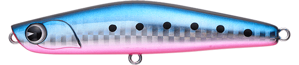
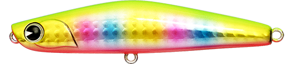
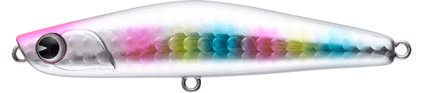
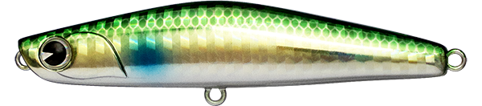

ヨイチ80
（YOICHI 80）
ヨイチ80はima（アイマ）のシンキングペンシルです。
YOICHIシリーズ初のサイズ展開として登場したモデルで、ヨイチ99の「飛距離・シャロー性能・使いやすさ」というコンセプトを80mmのボディに詰め込んでいます。港湾部でも使いやすいサイズ感ながら、18gの重さで小粒とは思えない飛距離が出せます。

画像出典:ima公式HP
スペック
- メーカー
- ima（アイマ）
- タイプ
- シンキングペンシル
- 全長
- 80mm
- 自重
- 18g
- レンジ
- 20〜60cm
- フック
- #6
- リング
- #3
- アクション
- スラローム
- ターゲット
- シーバス
- 価格
- 1,980円（税込）
▼今すぐチェック
ヨイチ80の特徴
小粒なのに飛ぶ、オールシーズン使える80mmシンペン
-
18gの重さと安定した飛行姿勢
80mmのボディに18gの重さを持たせ、飛行姿勢も安定しているため、小粒なルアーとは思えない飛距離が出せます。ほかのアングラーが届かない沖のポイントまで届けられます。
-
手元に水中を感じる引き抵抗
適度な引き抵抗があり、流れの変化や潮のヨレを手元で感じ取りやすいシンキングペンシル。流れに馴染ませてドリフトさせる使い方にも向いています。
-
重さの割にシャローを引ける
ヨイチ99ゆずりのシャロー性能で、重さの割に浅いレンジ（20〜60cm）をキープできます。干潟や河口の浅い場所でも根掛かりを気にせず使えます。
ヨイチ80の使い方
遠投してから、ゆっくりとただ巻きでスラロームさせるのが基本。巻くスピードを変えるだけでレンジを調整できます。
河川では、流れの上流側に投げて糸フケを取りながら流れに乗せるドリフトも効果的です。
ヨイチ80の得意な状況
港湾・干潟・河口・河川・サーフ・磯と、推奨エリアはほぼすべてのフィールド。ベイトが小さい時期や、アミ・ハク・カタクチイワシなど小型のベイトに付いたシーバスに、飛距離を落とさず小さいシルエットで合わせたいときに。
ワンポイント
ヨイチ99では大きすぎる、でも普通の80mmクラスでは飛距離が足りない、という場面にちょうど良い1本。シリーズ内では99が飛距離と大場所、80がサイズ感とオールラウンド、と使い分けると便利です。
ヨイチシリーズの使い分け
| モデル | 全長／自重 | 使いどころ |
|---|---|---|
| ヨイチ80 | 80mm／18g | 港湾から河川・サーフまで。小型ベイトの時期に |
| ヨイチ99 | 99mm／28g | 飛距離が欲しい大場所やサーフに |
| ヨイチ80 ブレード | 80mm | ブレードのフラッシングでアピールしたいときに |
ほかにも99 LIGHT・99 BALLISTA・120 クロスオーバーなどのモデルがあります。詳しくはヨイチ99の記事も参考にしてください。
人気カラー
全12色のレギュラーカラーから4色を紹介します（カラー名は公式の表記のまま）。

マコイワシイワシ系のナチュラルカラー。澄み潮の日中や、イワシがベイトのときに。

玉彩imaの人気カラー。ほどよいアピールで、まず投げる1本として。

コットンキャンディーピンク系のアピールカラー。濁りのある日や、朝夕のマヅメ時に。

ゴールドボラゴールドベースのボラカラー。ボラやコノシロがベイトのときや、濁り潮に。
画像出典:ima公式HP
ヨイチ80に似ているルアー
-
 パンチライン80
アピア
詳細はこちら＞
パンチライン80
アピア
詳細はこちら＞
80mm・13gのシンキングペンシル。同じ80mmクラスで、S字スラロームとローリングフォールで誘いたいときに。
-
 モアザン スイッチヒッター85S
ダイワ
詳細はこちら＞
モアザン スイッチヒッター85S
ダイワ
詳細はこちら＞
85mm・20gのシンキングペンシル。サイズと重さが近く、不規則なスラロームで誘いたいときのローテーションに。
-
 ヨイチ99
ima
詳細はこちら＞
ヨイチ99
ima
詳細はこちら＞
同じヨイチシリーズの99mm・28g。サーフや大場所で、もっと飛距離が欲しいときに。